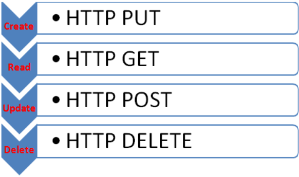
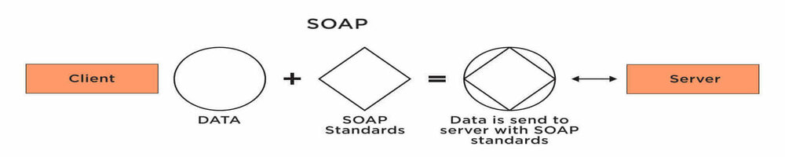
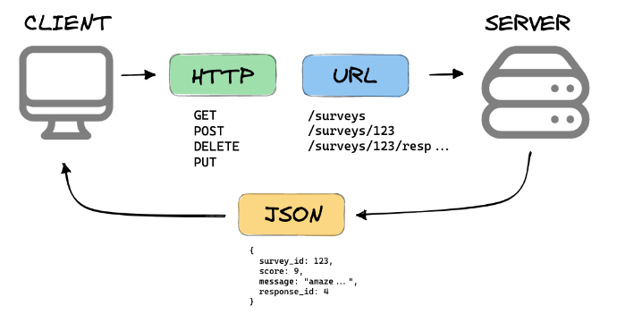

Las tecnologías de Web API son conjuntos de protocolos, estándares y formatos utilizados para facilitar la comunicación entre sistemas distribuidos a través de la web.
Estas tecnologías permiten la creación, el consumo y la integración de servicios web y APIs de manera eficiente y segura.
HTTP (Protocolo de Transferencia de Hipertexto)
¿Qué es?: HTTP es el protocolo fundamental que subyace a la web moderna.
Define cómo se comunican los clientes (como navegadores web) y los servidores (que alojan sitios web y otros recursos) a través de la transferencia de información.
Cómo se usa: HTTP utiliza un conjunto de métodos,
como GET para obtener datos, POST para enviar datos al servidor, PUT para actualizar recursos y DELETE para eliminar recursos. Las solicitudes y respuestas HTTP llevan datos en forma de mensajes, incluyendo encabezados y, opcionalmente, un cuerpo.
¿Por qué usarlo?: HTTP es esencial para la navegación y la comunicación en línea.
Facilita la transferencia de datos entre clientes y servidores de manera eficiente y segura. Además, su amplia adopción y compatibilidad lo convierten en una opción confiable para la interacción en la web.

SOAP (Simple Object Access Protocol)
¿Qué es?: SOAP es un protocolo de comunicación basado en XML que permite intercambiar mensajes entre sistemas distribuidos en una red.
Se utiliza principalmente en servicios web para garantizar la interoperabilidad entre diferentes plataformas y tecnologías.
Cómo se usa: SOAP define una estructura de mensaje XML que contiene información sobre la operación a realizar y los datos asociados.
Estos mensajes se envían a través de diferentes protocolos de red, como HTTP, SMTP, etc.
¿Por qué usarlo?: SOAP proporciona un mecanismo estandarizado y formal para la comunicación entre sistemas heterogéneos.
Es útil en entornos empresariales donde la estructura y la seguridad de las comunicaciones son críticas.

REST (Representational State Transfer)
¿Qué es?: REST es un estilo arquitectónico para sistemas distribuidos que se basa en la manipulación de recursos
a través de operaciones CRUD (Crear, Leer, Actualizar, Borrar) utilizando métodos HTTP estándar.
Cómo se usa: REST utiliza URIs (Uniform Resource Identifiers) para identificar y acceder a recursos,
y los métodos HTTP (GET, POST, PUT, DELETE) para realizar operaciones en estos recursos. Los datos se suelen representar en formatos como JSON o XML.
¿Por qué usarlo?: REST es flexible, escalable y fácil de entender.
Permite la construcción de APIs que son fáciles de mantener y consumir. Su enfoque basado en estándares web lo hace ideal para el desarrollo de servicios web y APIs.

JWT (JSON Web Tokens)
¿Qué es?: JWT es un estándar abierto (RFC 7519) que define un formato compacto y autenticado para la transferencia segura de información entre dos partes.
Cómo se usa: JWT consiste en un token codificado en formato JSON que contiene información sobre el usuario y
puede ser firmado y cifrado para garantizar su integridad. Se utiliza para la autenticación y la transferencia segura de datos entre el cliente y el servidor.
¿Por qué usarlo?: JWT proporciona un mecanismo seguro y eficiente para la autenticación y
autorización en aplicaciones web y APIs. Es fácil de implementar y es ampliamente utilizado en sistemas de autenticación modernos, como la autenticación basada en tokens.